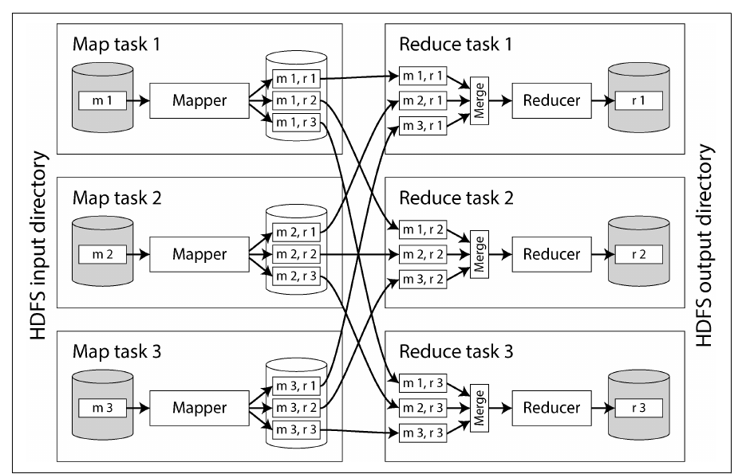
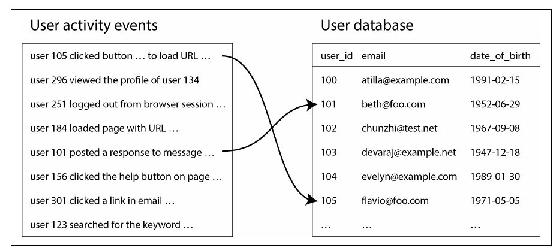
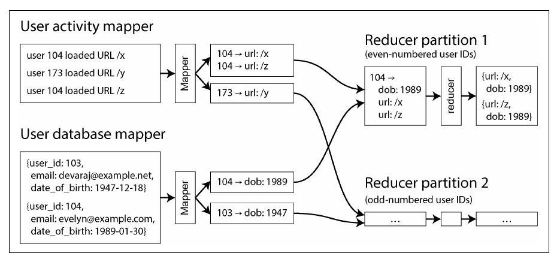

فصل ۱۱ · صص. ۴۵۱–۴۸۶
پردازش batch
Batch Processing
Designing Data-Intensive Applications, 2nd Edition
پردازش batch یک ورودی بزرگ، محدود و immutable را میگیرد و خروجی مشتقشده میسازد، معمولاً طبق یک زمانبندی. این فصل در ویراست دوم از نو نوشته شده و MapReduce حالا پیشینهی تاریخی حساب میشود. از یک pipeline یونیکسی شروع میکند که پرطرفدارترین صفحهها را در log یک وبسرور پیدا میکند، و به سیستمهای batch توزیعشده با سه لایه میرسد: storage، یعنی filesystemهای توزیعشده و object storeها؛ orchestration، یعنی job schedulerها و workflow orchestratorها؛ و computation، یعنی MapReduce و dataflow engineهایی مثل Spark و Flink. الگوریتم مرکزی shuffle است، یک sort توزیعشده که join و grouping را ممکن میکند. با بالغ شدن زیرساخت، تمرکز به سادگی استفاده رفت، یعنی SQL و DataFrame، و چارچوبهای batch با cloud data warehouseها به هم نزدیک شدند. فصل با کاربردهای اصلی تمام میشود: ETL، تحلیل، machine learning و رساندن دادهی مشتقشده به production.
فهرست خود فصل (از فهرست مطالب کتاب)
- پردازش batch با ابزارهای Unix (ص. ۴۵۴)
- تحلیل سادهی log (ص. ۴۵۴)
- زنجیرهی دستورها در برابر برنامهی سفارشی (ص. ۴۵۶)
- مقایسهی sort و تجمیع در حافظه (ص. ۴۵۶)
- پردازش batch در سیستمهای توزیعشده (ص. ۴۵۷)
- مفهوم distributed filesystem (ص. ۴۵۸)
- مفهوم object store (ص. ۴۶۰)
- مفهوم orchestration توزیعشدهی jobها (ص. ۴۶۱)
- مدلهای پردازش batch (ص. ۴۶۶)
- مدل MapReduce (ص. ۴۶۶)
- مفهوم dataflow engine (ص. ۴۶۸)
- مفهوم shuffle (ص. ۴۶۹)
- مفهوم join و grouping (ص. ۴۷۱)
- زبانهای کوئری (ص. ۴۷۳)
- مفهوم DataFrame (ص. ۴۷۵)
- کاربردهای batch (ص. ۴۷۶)
- مفهوم Extract–Transform–Load (ص. ۴۷۶)
- تحلیل (ص. ۴۷۷)
- مفهوم machine learning (ص. ۴۷۸)
- رساندن دادهی مشتقشده (ص. ۴۷۹)
- جمعبندی (ص. ۴۸۱)
از کتاب
مقدمه
سیستمهای online به درخواستها هر چه سریعتر جواب میدهند، یعنی response time و availability. کارهای batch، یا سیستمهای offline، ورودی read-only را میخوانند و هر بار خروجی را از صفر میسازند؛ آموزش مدل، تبدیل داده و تحلیلهای بزرگ؛ با throughput سنجیده میشوند، اغلب زمانبندیشدهاند، مثلاً روزانه، و از چند دقیقه تا چند روز طول میکشند. پردازش stream، فصل ۱۲، مدام اجرا میشود و به ورودی تازه واکنش نشان میدهد (صص. ۴۵۱–۴۵۳).
| فایدهی ورودی immutable و بدون اثر جانبی (ص. ۴۵۲) | هزینه (ص. ۴۵۲) |
|---|---|
| fault toleranceی انسانی: کد باگدار یعنی rollback و اجرای دوباره، یا برگشت به خروجی قبلی، یعنی time travel در object storeها و table formatها؛ دیتابیس با rollback کد نوشتنهای بد را برنمیگرداند | کارهای downstreamی معمولاً منتظر تمام شدن کل کار میمانند |
| توسعهی سریعتر قابلیتها، با کم کردن برگشتناپذیری | هر تغییری، حتی یک بایت، یعنی پردازش دوبارهی کل ورودی |
| همان فایلها به کارهای زیادی غذا میدهند، از جمله کارهای monitoringی که خروجی اجراها را مقایسه میکنند | ممکن است کارها چند ساعت یا چند روز طول بکشند |
| استفادهی کارآمد از compute در مقایسه با انجامش در سیستمهای OLTP |
مدل MapReduce، از Google در ۲۰۰۴ و بعد Hadoop، CouchDB و MongoDB، این حوزه را شکل داد اما حالا تقریباً منسوخ است؛ Google کدش را حذف کرده. امروز: Spark، Flink و موتورهای کوئری warehouse؛ Airflow، Dagster و Prefect جای Oozie و Azkaban را گرفتهاند؛ storage از HDFS، GlusterFS و CephFS به object storeهایی مثل S3 رفته؛ و BigQuery و Snowflake مرز warehouse و batch را کمرنگ کردهاند (ص. ۴۵۳).
لایهی Bronze در reference stack فقط append میشود و Silver و Gold از روی آن دوباره ساخته میشوند؛ یعنی همان ورودی immutable و خروجی از صفر.
?نوبت شما · یک باگ در منطق Silver سه هفته عددهای غلط ساخته. اگر Bronze را overwrite میکردید، چه چیزی از دست میرفت؟ و حالا چطور درستش میکنید؟دیدن پاسخ
با overwrite، نسخههای قدیم ردیفها از بین رفته بودند و دیگر نمیشد گذشته را درست حساب کرد؛ باگ به دادهی دائمی تبدیل میشد. چون Bronze دست نخورده، کد Silver را درست میکنید و آن را از Bronze دوباره میسازید، و Gold را هم بعد از آن؛ همان fault toleranceی انسانی (ص. ۴۵۲). هزینهاش پردازش دوبارهی کل ورودی است.
امتحان کنید
فصل ۱۱ در طول یک pipeline داده
باز کردن در صفحهی کامل ↗ · این شبیهسازی مدل خود vault از سازوکاری است که کتاب شرح میدهد.
از کتاب
پردازش batch با ابزارهای Unix
یک خط از access log در NGINX اینها را ثبت میکند: IP مربوط به client، کاربر، زمان، درخواست، مثلاً GET /css/typography.css، وضعیت ۲۰۰، ۳٬۳۷۷ بایت، referrer و user agent. تجزیهی log پشت pipelineهای تبلیغات و پرداخت است و به جنبش «big data» سوخت داد (ص. ۴۵۴).
cat /var/log/nginx/access.log |
awk '{print $7}' | # the requested URL
sort | # make repeats adjacent
uniq -c | # count each run
sort -r -n | # most requested first
head -n 5پنج صفحهی پرطرفدار (صص. ۴۵۴–۴۵۵)؛ مثلاً ۴٬۱۸۹ بار /favicon.ico. با تغییر awk میشود CSS را کنار گذاشت، با $7 !~ /\.css$/، یا IPها را شمرد، با {print $1}؛ چند گیگابایت در چند ثانیه.
| مفهوم pipeline در Unix، اول sort و بعد شمارش | اسکریپت Python با hash table | |
|---|---|---|
| مفهوم working set | جریان دارد؛ runهای مرتب به دیسک میریزند و merge میشوند؛ همان اصل SSTable و mergesort | باید همهی URLهای متمایز و شمارندهشان را در حافظه نگه دارد |
| کی میبرد | دادهی بزرگتر از حافظه؛ sort در GNU به دیسک میریزد و بین coreها موازی میشود؛ گلوگاه سرعت خواندن دیسک میشود | سایتهای کوچک و متوسط، حدود ۱ گیگابایت URL متمایز، حتی روی لپتاپ |
| محدودیت | یک ماشین | یک ماشین |
(صص. ۴۵۶–۴۵۷)
تحلیلگرها در JupyterHub در reference stack گاهی یک فایل Parquet بزرگ را با pandas باز میکنند و روی آن groupby میزنند.
?نوبت شما · یک groupby روی ستونی با دهها میلیون مقدار متمایز در notebook با خطای حافظه از کار میافتد. چه گزینههایی دارید؟دیدن پاسخ
مفهوم groupby در pandas یک hash table در حافظه است و باید همهی کلیدهای متمایز را جا بدهد، مثل اسکریپت Python کتاب (صص. ۴۵۶–۴۵۷). یا تجمیع را به ClickHouse بفرستید، که میتواند برای GROUP BY بزرگ به دیسک بریزد، یا داده را با کلید به تکهها بخش کنید و هر تکه را جدا تجمیع کنید؛ همان ایدهی runهای مرتب و merge.
از کتاب
پردازش batch در سیستمهای توزیعشده
یک ماشین تنها storage پشت یک filesystem، یک scheduler و برنامههایی دارد که با pipe به هم وصلاند؛ چارچوبهای batch توزیعشده همین قطعهها هستند که پخش شدهاند؛ یک سیستمعامل توزیعشده (ص. ۴۵۷).
flowchart TB
subgraph One["One machine"]
direction LR
FS1[Filesystem] --- K[Kernel scheduler] --- P["awk | sort | uniq"]
end
subgraph Many["Cluster"]
direction LR
FS2["Distributed filesystem /<br/>object store"] --- O["Job orchestrator<br/>(YARN, Kubernetes)"] --- E["Dataflow engine tasks<br/>(Spark, Flink)"]
end
One -. "same roles, distributed" .-> Manyپردازش batch در سیستمهای توزیعشده
مفهوم distributed filesystem
صص. ۴۵۸–۴۶۰| لایهی filesystem در سیستمعامل | معادل توزیعشده |
|---|---|
| مفهوم block device، با blockهای ۴٬۰۹۶بایتی در ext4 | blockهای بزرگ روی data nodeها؛ ۱۲۸ مگابایت در HDFS، و ۴ مگابایت در JuiceFS و خیلی از object storeها؛ metadata کمتر و seek ارزانتر؛ یک فایل ۹۰۰ مگابایتی یعنی هفت block ۱۲۸ مگابایتی و یک block ۴ مگابایتی |
| مفهوم page cache | مفهوم page cache سیستمعامل روی data nodeها، بهعلاوهی cache سمت client یا دیسک محلی، مثل JuiceFS |
| مفهوم metadata در filesystem، یعنی inode و دایرکتوری | یک سرویس metadata؛ NameNode در HDFS؛ 3FS در DeepSeek metadata را در FoundationDB نگه میدارد |
| مفهوم VFS | یک پروتکل قابل تعویض؛ S3 API، با MinIO، R2، Tigris، B2 و…؛ POSIX از راه FUSE یا NFS، مثل Amazon EFS و Archil |
مفهوم distributed filesystem روی سختافزار معمولی shared-nothing است، برخلاف دستگاههای NAS و SAN، پس blockها replicate یا با erasure coding، مثل Reed–Solomon، ذخیره میشوند؛ بازیابی شبیه RAID روی یک شبکهی معمولی؛ و همین اجازه میدهد scheduler یک task را روی هر nodeی اجرا کند که یک replica دارد (صص. ۴۵۹–۴۶۰).
پردازش batch در سیستمهای توزیعشده
مفهوم object store
صص. ۴۶۰–۴۶۱سرویسهای S3، Google Cloud Storage، Azure Blob Storage و OpenStack Swift؛ با URLهایی مثل s3://my-photo-bucket/2025/04/01/birthday.png، یعنی bucket یکتا در کل دنیا بهعلاوهی key.
| مفهوم filesystem، مثل HDFS | مفهوم object store |
|---|---|
فایل با handle، یعنی fopen و fseek، و append | مفهوم object immutable با get و put؛ برای بهروزرسانی بازنویسی میکنید؛ append فقط در Azure Blob و S3 Express One Zone |
| دایرکتوری واقعی، حتی خالی | اسلش فقط بخشی از key است؛ فهرست کردن با prefix بازگشتی است؛ «دایرکتوری» خالی وجود ندارد، فقط objectهای صفربایتی جانگهدار |
| لینک سخت و نرم، قفل، و rename اتمی | لینک و قفل ندارد؛ rename یعنی copy و delete، یکییکی برای هر object |
| اجرای task جایی که داده هست | جدایی storage و compute؛ پهنای باند بیشتر، اما شبکههای سریع آن را قابل قبول میکنند و منابع مستقل scale میشوند |
هر دو برای objectهای بزرگ، از مگابایت تا گیگابایت، و خواندنهای بزرگ و کمتکرار مناسباند، هرچند S3 Express One Zone حالا latency در حد یک میلیثانیه میدهد. JuiceFS و Ceph هر دو API را میدهند، با تضمینهای خیلی متفاوت (صص. ۴۶۰–۴۶۱).
بخش loader در reference stack فایلهای Parquet را در staging روی storage سازگار با S3 مینویسد، و مرحلهی بعد فایلهای زیر یک prefix را برای load در Bronze فهرست میکند.
?نوبت شما · بخش loader چند فایل در یک prefix مینویسد و وسط کار شکست میخورد. مرحلهی بعد prefix را فهرست میکند و هر چه هست load میکند. چه مشکلی پیش میآید، و چرا «اول در prefix موقت بنویس، بعد rename کن» اینجا کمک کامل نمیکند؟دیدن پاسخ
بخشی از batch در Bronze مینشیند و اجرای بعدی تکرارشان میکند. در object store، rename اتمی نیست و برای هر object یک copy و delete است (صص. ۴۶۰–۴۶۱)، پس جابهجا کردن prefix هم نیمهکاره میماند. راه رایج: آخر کار یک فایل manifest یا یک نشانهی پایان، مثل _SUCCESS، با فهرست فایلها بنویسید، و مرحلهی بعد فقط وقتی آن فایل هست و فقط فایلهای فهرستشده را بخواند.
پردازش batch در سیستمهای توزیعشده
مفهوم orchestration توزیعشدهی jobها
صص. ۴۶۱–۴۶۶یک درخواست job اینها را دارد: تعداد taskها؛ حافظه، CPU و دیسک برای هر task؛ شناسهی job؛ اعتبارنامهها؛ پارامترها، یعنی ورودیها و خروجیها؛ نیاز سختافزاری، مثل GPU؛ و محل کد (صص. ۴۶۱–۴۶۲).
| جزء | نقش | نمونهها |
|---|---|---|
| مفهوم task executor | اجرای taskها، heartbeat و پیگیری وضعیت؛ جداسازی با cgroup | سرویس NodeManager در YARN و kubelet در Kubernetes |
| مفهوم resource manager | دید کلی از nodeها و منابع؛ state در یک coordination service | سیستم YARN با ZooKeeper و Kubernetes با etcd |
| مفهوم scheduler | تصمیم اینکه کدام task کجا اجرا شود؛ sub-schedulerهای مخصوص هر اپلیکیشن | مفهوم ApplicationMaster در YARN و operatorها در Kubernetes |
تخصیص منابع (صص. ۴۶۳–۴۶۴): پنج node، ۱۶۰ core، دو job که هر کدام ۱۰۰ میخواهند؛ تقسیم ۸۰ و ۸۰؟ gang scheduling، یعنی صبر تا ۱۰۰ core آزاد شود، با nodeهای بیکار و احتمال deadlock یا گرسنگی؟ preempt، با کار هدررفته؟ تخصیص بهینه NP-hard است، پس schedulerها از روشهای ابتکاری استفاده میکنند: FIFO، dominant resource fairness، صفهای اولویت، زمانبندی با ظرفیت یا سهمیه، و bin packing.
زمانبندی workflowها (صص. ۴۶۴–۴۶۵): یک workflow، یعنی DAGی از jobها، وقتی پیش میآید که خروجی یک job به jobهای چند تیم غذا بدهد، داده بین ابزارها جابهجا شود، مثل Spark به HDFS به Trino به S3، یا مرحلهها sharding متفاوتی لازم داشته باشند. pipeها داده را مستقیم با backpressure رد میکنند، و Spark و Flink هم میتوانند، اما معمولاً هر job در DFS یا object store مینویسد و بعدی از آن میخواند؛ جدا از هم در زمان. schedulerهای هر job وابستگیها را مدیریت نمیکنند، پس Airflow، Dagster و Prefect این کار را میکنند؛ workflowهای ۵۰ تا ۱۰۰ jobی رایجاند. این با workflowهای orchestrate کردن RPC در فصل ۵ یکی نیست.
مدیریت fault (صص. ۴۶۵–۴۶۶): کارهای طولانی خرابی خواهند دید، و همینطور preemption عمدی instanceهای ارزان و کماولویت spot یا preemptible، که از خرابی سختافزار رایجتر است. چون خروجی از صفر ساخته میشود، خروجی نیمهکاره را پاک کنید و فقط task شکستخورده را retry کنید.
| دادهی میانی بین taskها | تحمل fault |
|---|---|
| مدل MapReduce | در DFS نوشته میشود؛ خوانندهها صبر میکنند تا نویسنده موفق شود؛ امن اما پرنوشتن |
| موتور Spark | در حافظه نگه داشته میشود و به دیسک محلی میریزد؛ ردیابی میکند چطور حساب شده، یعنی lineage، تا اگر گم شد دوباره حسابش کند |
| موتور Flink | مفهوم checkpoint دورهای از state هر task |
هر جدول در reference stack DAG خودش را در Airflow دارد، و ساختن Silver و Gold به چند جدول Bronze وابسته است.
?نوبت شما · یک جدول Silver به سه جدول Bronze وابسته است که سه DAG جدا load میکنند. اگر Silver فقط با یک زمانبندی ثابت، مثلاً ساعت ۶، اجرا شود، چه میشود؟ و اگر وسط ساختش شکست بخورد؟دیدن پاسخ
اگر یکی از loadها دیر کند، Silver روی ورودی ناقص ساخته میشود و کسی خبردار نمیشود؛ وابستگی بین jobها کار workflow orchestrator است، پس Silver باید به پایان موفق هر سه load وابسته باشد، نه به ساعت (صص. ۴۶۴–۴۶۵). اگر شکست بخورد، چون خروجی از صفر ساخته میشود، خروجی نیمهکاره را دور بریزید و فقط همان task را retry کنید (صص. ۴۶۵–۴۶۶).
مدلهای پردازش batch
مدل MapReduce
صص. ۴۶۶–۴۶۸تحلیل log مستقیم به آن map میشود: ۱) فایلهای ورودی، مثل Parquet و Avro، به شکل رکورد خوانده میشوند؛ ۲) mapper زوجهای کلید و مقدار را بیرون میکشد، مثل awk '{print $7}'؛ ۳) sort بر اساس کلید، بهطور ضمنی؛ ۴) reducer روی مقدارهای هر کلید میچرخد، مثل uniq -c. یک sort دوم برای رتبهبندی یعنی یک job دوم MapReduce. mapperها برای هر رکورد بدون state هستند و موازی اجرا میشوند؛ reducerها برای هر کلید موازی اجرا میشوند (صص. ۴۶۶–۴۶۷). این مدل از برنامهنویسی تابعی آمده، یعنی map و fold در Lisp؛ نبود state mutable موازیسازی و retry را امن میکند. اما MapReduce خام پرزحمت است، مثلاً joinها را باید دستی نوشت، و کند است؛ I/O مبتنی بر فایل جلوی pipeline کردن را میگیرد (ص. ۴۶۸).
مدلهای پردازش batch
مفهوم dataflow engine
صص. ۴۶۸–۴۶۹موتورهای Spark و Flink، که بعد از سیستمهای پژوهشی Dryad و Nephele آمدند، کل workflow را یک job با عملگرهای relational میبینند، یعنی join، group by، filter و aggregate، که روی shuffle ساخته شدهاند و آزادانه کنار هم چیده میشوند، به جای تناوب سخت map و reduce.
| مدل MapReduce | مفهوم dataflow engine |
|---|---|
| بین هر map و reduce sort میکند | فقط جایی که لازم است sort میکند |
| مرحلههای جدا | عملگرهایی را که sharding را حفظ میکنند، مثل map و filter، در یک task merge میکند |
| همهی وابستگیهای داده را میداند، پس بهینهسازی locality میکند، مثل تبادل از راه حافظهی مشترک | |
| مفهوم state میانی در DFS replicate میشود | در حافظه یا دیسک محلی |
| مرحلهی بعد منتظر کل مرحلهی قبل میماند | عملگرها بهمحض آماده شدن ورودی شروع میکنند |
| یک JVM تازه برای هر task | processها را دوباره به کار میبرد |
مدلهای پردازش batch
مفهوم shuffle
صص. ۴۶۹–۴۷۱یک shuffle یک sort توزیعشده با ورودی و خروجی shardشده است؛ و برخلاف اسمش، ترتیب مرتب میسازد، نه تصادف. MapReduce، Spark، Flink، Daft، Dataflow و BigQuery آن را پیاده کردهاند (ص. ۴۷۰).


برای هر بخش ورودی یک map task اجرا میشود؛ نویسندهی job تعداد reducerها را انتخاب میکند. هر mapper فایل مقصد را با hash کلید انتخاب میکند، با runهای مرتب و merge به سبک LSM؛ reducerها فایلشان را از هر mapper کپی میکنند و merge میکنند، پس کلیدهای برابر کنار هم قرار میگیرند؛ خروجیها به DFS برمیگردند (صص. ۴۷۰–۴۷۱). BigQuery دادهی shuffle را در حافظه نگه میدارد و از سرویسهای sort بیرونی استفاده میکند (ص. ۴۷۱).
مدلهای پردازش batch
مفهوم join و grouping
صص. ۴۷۱–۴۷۳مثال join کتاب: رویدادهای فعالیت، یعنی clickstream یا fact table، با یک دیتابیس کاربر، یعنی یک dimension، تا ببینیم صفحهها بین کاربرهای جوانتر پرطرفدارترند یا مسنتر؛ شکل ۱۱-۲.


flowchart LR
E[Activity events] -- "mapper: key = user ID,<br/>value = viewed URL" --> SH{Shuffle on user ID}
U[User database] -- "mapper: key = user ID,<br/>value = date of birth" --> SH
SH -- "secondary sort:<br/>user record first,<br/>then events by time" --> RD["Reducer: remember date of birth,<br/>emit (URL, birth date) per event"]
RD --> G{"Next job: shuffle on URL"} --> AG["Count views per age group<br/>(group by + aggregate)"]این یک sort-merge join است، شکل ۱۱-۳: خروجی مرتب mapperها، که برای هر کلید merge میشود؛ هر reducer فقط یک رکورد کاربر را در حافظه نگه میدارد و هیچ درخواست شبکهای نمیفرستد (ص. ۴۷۲).


ساختن Silver در reference stack اغلب یعنی join یک جدول رویداد بزرگ، مثل تراکنشها، با یک جدول dimension، مثل مشتریها، داخل ClickHouse.
?نوبت شما · یک join بین تراکنشها و مشتریها با خطای حافظه شکست میخورد، در حالی که همان join با جدول کوچکتر شعبهها خوب کار میکند. چه فرقی دارند؟دیدن پاسخ
مفهوم hash join یک طرف join را کامل در حافظه نگه میدارد؛ جدول شعبهها جا میشود و جدول میلیونی مشتریها شاید نه. sort-merge join کتاب هر دو طرف را با کلید مرتب میکند و هر بار فقط رکوردهای یک کلید را در حافظه دارد، پس با دادهی بزرگتر از حافظه کار میکند (صص. ۴۷۱–۴۷۳). در عمل یعنی الگوریتم join مناسب را انتخاب کنید یا طرف کوچکتر را در حافظه بگذارید؛ همان انتخاب بین hashing و sorting.
امتحان کنید
مفهوم shuffle و sort-merge join
باز کردن در صفحهی کامل ↗ · این شبیهسازی مدل خود vault از سازوکاری است که کتاب شرح میدهد.
مدلهای پردازش batch
زبانهای کوئری و DataFrame
صص. ۴۷۳–۴۷۵مفهوم clusterهای بیش از ۱۰٬۰۰۰ ماشین که چندین petabyte را پردازش میکنند به گفتهی کتاب «کموبیش حلشده» است، پس تمرکز به مدل برنامهنویسی رفت. مفهوم SQL زبان مشترک شد: کد کمتر، کاوش تعاملی، و cost-based optimizerهایی، در Hive، Trino، Spark و Flink، که الگوریتم join را انتخاب میکنند و ترتیب joinها را عوض میکنند. جایگزینهای خاص: Apache Pig برای pipelineهای relational قدمبهقدم، Morel، jq و JMESPath و JSONPath، و Gremlin برای graph (صص. ۴۷۳–۴۷۴).
پردازش batch و warehouseهای cloud به هم نزدیک میشوند (صص. ۴۷۴–۴۷۵): چارچوبهای batch صاحب SQL، Parquet و اجرای vectorized یا compiled شدند؛ warehouseها صاحب scale در cloud، shuffle و تحمل fault، و مدلهای غیر-SQL، مثل BigQuery DataFrames و Snowpark در Snowflake. با این حال الگوریتمهای graph تکراری، ML پیچیده و دادهی چندرسانهای AI در SQL سختاند؛ warehouseها در کار ردیفبهردیف ضعیفترند و اغلب از Spark یا Flink گرانترند. انتخاب به هزینه، راحتی و در دسترس بودن برمیگردد.
مفهوم DataFrame (ص. ۴۷۵) interfaceهای R و Pandas را به Spark، Flink و Daft میآورد. DataFrameهای محلی index و ترتیب دارند؛ نوع توزیعشده معمولاً ندارد، که کارایی را غافلگیرکننده میکند. Pandas مشتاقانه اجرا میکند؛ Spark اول یک query plan میسازد و بهینهاش میکند؛ Daft عملیات کوچک را سمت client و بزرگ را سمت سرور اجرا میکند و Apache Arrow را به اشتراک میگذارد.
از کتاب
کاربردهای batch
هر جا داده بزرگ است و تازگی مهم نیست: تطبیق حسابداری و انبار، پیشبینی تقاضا در تولید، آموزش سیستم پیشنهاد؛ و شبکهی بانکی آمریکا تقریباً کامل روی کارهای batch میچرخد (ص. ۴۷۶).
| کاربرد | چه چیزی batch میدهد (صص. ۴۷۶–۴۷۹) |
|---|---|
| مفهوم ETL | تبدیلهایی که بهسادگی موازی میشوند؛ schedulerهایی که retry میکنند، کارهای شکستخورده را علامت میزنند و operator برای MySQL، PostgreSQL، Snowflake، Spark، Flink و… دارند؛ اشکالزدایی آسان فایلهای شکستخورده. مفهوم data mesh، data contract و data fabric اجازه میدهند تیمها pipelineهای خودشان را منتشر کنند؛ ETL و تحلیل حالا موتورهای مشترک دارند، یعنی SparkSQL، Trino و DuckDB |
| تحلیل | موتورهای SQL روی object storage بهعلاوهی table formatها، مثل Iceberg، بهعلاوهی catalogها، مثل Unity، یعنی یک data lakehouse. پیشتجمیع در cube و data mart یا Druid و Pinot طبق زمانبندی؛ کوئریهای ad hoc تکراری؛ ابزارهای BI، یعنی Tableau، Power BI، Looker و Superset، از راه SparkSQL، Presto و Trino وصل میشوند |
| مفهوم machine learning | مفهوم feature engineering، آموزش مدل، یعنی از دادهی ورودی به وزنها، و batch inference؛ Spark MLlib و FlinkML. الگوریتمهای graph در مدل bulk synchronous parallel، یا Pregel، با Giraph، GraphX و Gelly. آمادهسازی داده برای LLM: بیرون کشیدن متن از HTML، حذف سندهای کمکیفیت و تکراری، tokenize و embed؛ Kubeflow، Flyte و Ray، که OpenAI برای آموزش ChatGPT استفاده کرده؛ notebookها، یعنی Jupyter و Hex |
کاربردهای batch
رساندن دادهی مشتقشده
صص. ۴۷۹–۴۸۱پیشنهادها، گزارشها و featureهای ML باید به یک دیتابیس production، key-value store یا موتور جستوجو برسند.
| روش | حکم |
|---|---|
| نوشتن رکورد به رکورد از کار batch در دیتابیس production | بد: یک درخواست شبکه برای هر رکورد چندین مرتبه کندتر است؛ taskهای موازی ممکن است دیتابیس را از پا بیندازند؛ خروجی همه یا هیچ کار را میشکند، یعنی نوشتنهای نیمهکاره یا تکراری دیده میشوند |
| فرستادن خروجی به یک stream، مثل topicهای Kafka، که Elasticsearch، Pinot، Druid، Venice و ClickHouse از آن ingest میکنند | نوشتن ترتیبی؛ یک buffer که consumerها سرعتش را تنظیم میکنند؛ یک خروجی و چند مصرفکننده؛ یک مرز امنیتی DMZ. برای همه یا هیچ، وقتی تمام شد به consumerها خبر بدهید و تا آن موقع داده را نامرئی نگه دارید، مثل read committed |
| ساختن یک دیتابیس کاملاً تازه در خود job و bulk-load کردنش، مثل TiDB Lightning، import از Hadoop در Pinot و ingest فایلهای SST در RocksDB | خیلی سریع است و اجازهی جابهجایی اتمی بین نسخهها را میدهد؛ بهروزرسانی افزایشی سختتر است؛ ترکیبهایی مثل Venice هر دو را پشتیبانی میکنند |
مفهوم API پیشبینی در reference stack از یک مدل ثبتشده در MLflow استفاده میکند، و بعضی امتیازها هر شب بهصورت batch برای همهی مشتریها حساب میشوند.
?نوبت شما · کار شبانه امتیاز میلیونها مشتری را حساب میکند و هر کدام را با یک INSERT جدا در جدولی مینویسد که API از آن میخواند. وسط کار شکست میخورد و retry میشود. چه مشکلی دارد و بهتر چیست؟دیدن پاسخ
میلیونها درخواست شبکه کند است و ممکن است دیتابیسی را که API از آن میخواند زیر بار ببرد؛ و بعد از شکست، API ترکیبی از امتیازهای امشب و دیشب را میبیند، و retry ممکن است تکراری بسازد (صص. ۴۷۹–۴۸۰). بهتر: کل خروجی را در یک جدول یا فایل تازه بسازید و بعد API را یکجا به نسخهی تازه بفرستید؛ همان bulk-load با جابهجایی اتمی (صص. ۴۸۰–۴۸۱).
مرور
بدهبستانها در یک نگاه
| مدل MapReduce | مفهوم dataflow engine، یعنی Spark و Flink | |
|---|---|---|
| واحد کار | jobهای مستقل map و reduce که با فایل به هم زنجیر شدهاند | کل workflow به شکل یک job |
| دادهی میانی | در distributed filesystem نوشته میشود | حافظه یا دیسک محلی |
| مفهوم sort | همیشه، بین map و reduce | فقط جایی که یک عملگر لازمش دارد |
| بازیابی از fault | اجرای دوبارهی task از ورودی materializeشده | محاسبهی دوباره از lineage در Spark، یا checkpoint در Flink |
| interfaceها | تابعهای سطح پایین map و reduce | عملگرها، SQL و DataFrame |
مرور
نکتههای کلیدی
- ورودی immutable اجرای دوبارهی کارهای batch را امن میکند: خروجی یک کار باگدار را میشود دور ریخت و دوباره حساب کرد؛ یعنی «fault toleranceی انسانی» (صص. ۴۵۱–۴۵۲).
- وقتی working set از حافظه بزرگتر است، sort از تجمیع در حافظه بهتر است، چون runهای مرتب را میشود بهترتیب از دیسک merge کرد (صص. ۴۵۶–۴۵۷).
- چارچوبهای batch توزیعشده شبیه یک سیستمعامل توزیعشدهاند: filesystem یا object store، scheduler، و برنامههایی که با داده به هم وصلاند (صص. ۴۵۷–۴۶۶).
- مفهوم dataflow engine، یعنی Spark و Flink، کل workflow را یک job میبیند، state میانی را در حافظه یا دیسک محلی نگه میدارد، و از sort و materialize اجباری MapReduce بین مرحلهها پرهیز میکند (صص. ۴۶۶–۴۶۹).
- مفهوم shuffle یک sort است، نه درهمریختن تصادفی: همهی رکوردهای یک کلید را کنار هم میآورد و sort-merge join و grouping را ممکن میکند (صص. ۴۶۹–۴۷۳).
- مفهوم SQL و DataFrame interfaceهای اصلی شدند، و چارچوبهای batch و warehouseهای cloud به هم نزدیک شدند (صص. ۴۷۳–۴۷۶).
- از یک کار batch رکورد به رکورد در دیتابیس production ننویسید؛ dataset بسازید و bulk-load کنید، یا آن را در یک stream منتشر کنید (صص. ۴۷۹–۴۸۱).
تمرین
خودتان را بسنجید
پرسشها و پاسخها را خود vault از روی یادداشتهای بالا نوشته است؛ پاسخها به صفحههای کتاب ارجاع میدهند.
۱چرا sort | uniq -c وقتی URLهای متمایز دیگر در حافظه جا نمیشوند همچنان کار میکند، اما اسکریپت hash table شکست میخورد؟دیدن پاسخ
دستور sort تکههای مرتب را به دیسک میریزد و merge میکند، مثل SSTableها، پس با I/O ترتیبی دادهی بزرگتر از حافظه را اداره میکند؛ hash table در حافظه بهسادگی جا کم میآورد (صص. ۴۵۶–۴۵۷).
۳در sort-merge join، چرا reducer باید رکورد کاربر را پیش از رویدادهای فعالیت ببیند؟دیدن پاسخ
مفهوم shuffle رکوردهای هر user ID را کنار هم میآورد؛ اگر رکورد کاربر اول بیاید، با secondary sort، reducer فقط همان یک رکورد را در حافظه نگه میدارد و رویدادهای فعالیت را پشت سر هم میخواند و رکوردهای joinشده را بیرون میدهد (صص. ۴۷۱–۴۷۳).
۴سه بهینهسازی را نام ببرید که dataflow engineها انجام میدهند و MapReduce نمیتوانست.دیدن پاسخ
مثلاً: state میانی را در distributed filesystem نمینویسند، فقط جایی که لازم است sort میکنند، عملگرها را pipeline میکنند به جای انتظار برای کل مرحلهها، و کار را با دانستن گراف کامل job زمانبندی میکنند (صص. ۴۶۸–۴۶۹).
۶مفهوم loader فایلهای Parquet را در یک prefix روی object storage مینویسد و وسط کار شکست میخورد. چرا مرحلهی بعد نباید هر چه را زیر prefix هست load کند؟دیدن پاسخ
چون بخشی از فایلها نوشته شدهاند و object store نه rename اتمی دارد نه قفل؛ خواندن prefix نیمهکاره خروجی همه یا هیچ را میشکند. یک manifest یا نشانهی پایان در آخر کار، و خواندن فقط فایلهای فهرستشده، راه رایج است (صص. ۴۶۰–۴۶۱، ۴۷۹–۴۸۱).
مکمل
فراتر از کتاب
مکمل vault، نه از متن کتاب.
- انتخاب بین «sorting و hashing» داخل موتورهای کوئری دوباره پیدا میشود: hash aggregation و hash join وقتی working set در حافظه جا میشود، و external sort یا hash join بخشبندیشده، یعنی Grace، وقتی جا نمیشود.
- ابزار dbt مفهوم «ELT با SQL» روی warehouseها را رایج کرد؛ همان نزدیک شدنی که فصل توصیف میکند، از سمت analytics engineering.
قدمهای بعدی
ادامه بدهید
پیوندها
- فصلهای مرتبط: فصل ۱: بدهبستانها در معماری سیستمهای داده برای ETL و data lake، فصل ۳: مدلهای داده و زبانهای کوئری برای DataFrame و star schema، فصل ۴: ذخیرهسازی و بازیابی برای sort-merge و ذخیرهسازی ستونی، فصل ۱۲: پردازش stream برای حالت بیکران، و فصل ۱۳: فلسفهی سیستمهای streaming برای پردازش دوباره.